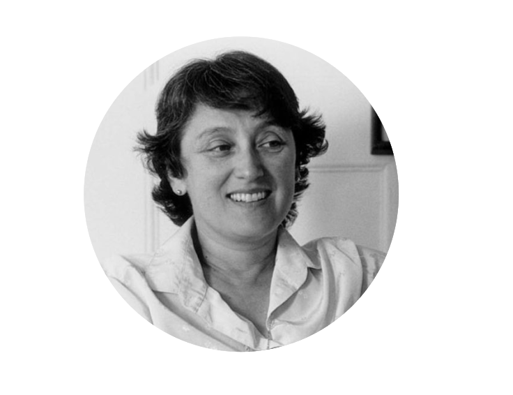

| Celula Vegetal |
| Célula Animal |
| Celula Procarionte |
| Java Quiz |
QUEM FOI LYNN MARGULIS
Antes de tudo, devemos conhecer Lynn Margulis: aquela que criou a teoria que hoje conhecemos e estudamos! Margulis, doutora honoris causa pela Universidade Autônoma de Madri e agraciada com a Medalha Nacional de Ciência dos EUA em 1999, foi também uma das impulsoras, ao lado do britânico James Lovelock, da Teoria de Gaia. Nascida em Chicago em 1938, entrou na Universidade de Chicago quando tinha 14 anos. Formada em Zoologia e Genética pela Universidade de Wisconsin, também era doutora em Genética pela Universidade da Califórnia e co-diretora do departamento de Biologia Planetária da Nasa. Lynn Margulis publicou numerosos artigos e livros. Seu texto "Simbiose na evolução da célula" (1981) é considerado um clássico da Biologia do século 20. Margulis foi casada com o astrônomo Carl Sagan, um divulgador da ciência que ganhou fama mundial com seu programa de televisão "Cosmos", falecido em 1996, e era mãe do poeta Dorion Sagan, que colaborou com ela em diversas publicações.

TEORIA ENDOSSIMBIÓTICA
A teoria endossimbiótica foi proposta por Lynn Margulis, em 1981, em um livro intitulado Symbiosis in Cell Evolution. Segundo a teoria endossimbiótica, mitocôndrias e cloroplastos eram organismos procariontes que viviam de modo livre. Essas estruturas foram englobadas por células eucariontes, o que resultou em uma relação simbiótica, em que ambos os envolvidos eram beneficiados com a associação. As mitocôndrias provavelmente eram organismos procariontes aeróbios, e os cloroplastos eram procariontes fotossintetizantes. Esses organismos procariontes forneciam energia para a célula que os englobou, e a célula hospedeira fornecia proteção contra o ambiente externo.
O QUE SÃO MITOCÔNDRIAS?
As mitocôndrias são organelas celulares que tem a ver com o processo de respiração celular. Chamadas também de “casas de força” das células, pois, por meio do processo de respiração celular, uma grande quantidade de ATP é gerada.
O QUE SÃO CLOROPLASTOS?
Os cloroplastos são as organelas celulares em que ocorrem as reações de fotossíntese, que utilizam a energia luminosa para a produção de moléculas orgânicas. Essas importantes estruturas são encontradas nas algas verdes e nas plantas.
Saiba mais clicando no video acima!
veja abaixo alguns tipos de vacúolos da célula vegetal
vacúolo de suco celular
Os vacúolos de suco celular, geralmente chamados somente vacúolos, são muito comuns, sendo menores e mais numerosos na planta jovem, se tornam único e grande nas plantas maduras. Tem função de reserva de substâncias, como amido e pigmentos, e atuam no mecanismo de pressão osmótica que regula a entrada e saída de água.
vacúolo digestivo
Esses vacúolos realizam a digestão intracelular e estão presentes em protozoários e em células animais e humanas como os macrófagos.
vacúolo contráteis
Nos protozoários e em alguns organismos mais simples como os poríferos os vacúolos também estão presentes. São chamados vacúolos contráteis ou pulsáteis e controlam a entrada e saída de água da célula por osmose. Eles também realizam o armazenamento de substâncias.
EVIDÊNCIAS QUE PROVAM A TEORIA
- Cloroplastos e mitocôndrias assemelham-se a bactérias em tamanho e forma, além da semelhança genética e bioquímica, o que sugere que possam ter ancestrais procariotos;
- Cloroplastos e mitocôndrias possuem DNA e ribossomos próprios;
- DNA de cloroplastos e mitocôndrias são bastante diferentes daquele existente no núcleo da célula;
- As duas organelas possuem o seu próprio sistema de membranas internas e a presença de duas membranas revestindo-as;
- Tanto cloroplastos quanto mitocôndrias possuem capacidade de autoduplicação.